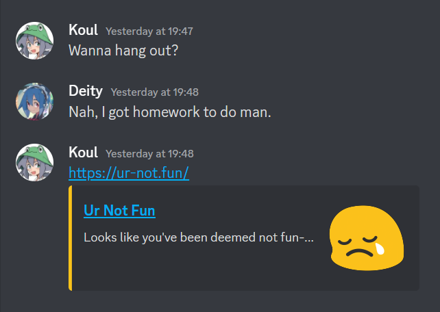
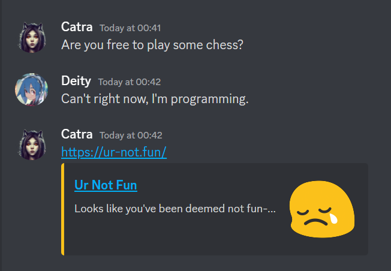
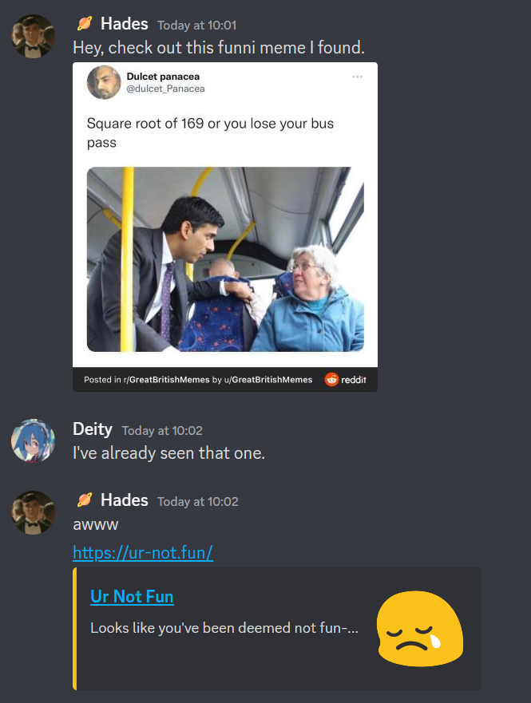

Uh oh! That's not good! Looks like you've just been deemed not fun by whoever sent you this! This is quite the unfortunate circumstance for you. You must be in tears by now after hearing this tragic news. This quick guide will quickly discuss and explain what it means to be not fun.
To be fun is to be someone who is always ready and willing to do fun things by themselves and their friends. A fun person will not turn down a fun opportunity, even if their life depends on it!

Here's a prime example of an someone who is not fun. Someone as opportune as them offered a chance to do something very fun, but this person denied the offer. That is not fun at all, and is punishable by ur-not.fun guidelines.

Here's another comparably prime example of an someone who is not fun. This person was offered a perfect chance to have some fun playing chess, but they put some nerdy stuff first. This is what we consider not fun. Some may even say it's actually also because ur-not.pro and you just can't come to terms with it.

This is probably the worst thing someone could do. Not to mention the least fun thing you could say in response. They are not only ruining the fun by removing any and all affirmation, they're also making the person feel like they're behind on the fun. This is not fun at all, it's outright abhorrent and most certainly deemable of the ur-not.fun title.
There are a thousand and more different scenarios and examples. But these three should just about sum up what it means to be not fun. But I think the two of us would rather not be sitting here forever and a day thinking about all the possibilities. So....
🤨 What Makes ME Not Fun?
You probably did something deserving of of being deemed not fun. You may have replicated one of the examples, or you did something that goes against the ur-not.fun guidelines. Or maybe even, you did nothing at all (doing nothing at all is still unfun as you're not even trying to contact this person to organise something fun with them.
🔧 How Can I Become Fun?
The truth is. You probably can't. If what you were doing before was genuinely so important that you had to go and be not fun, then you should probably get to doing that and catch up on being fun some other time, unless you decide to take back what you did to become not fun, then you will definitely be fun!. Alternatively, the person who named you as not fun can retract their claim. But until either option follows suite, you can't really do much.
This probably seems a little unfair. But to be honest. It's your fault for not being fun!
🤯 Conclusion!
You're simply not fun. And you will live out your life as not fun, sorry! But at least you've been educated on how to be fun next time. And maybe now, you can even use this on someone else, or possibly use it as revenge on the person who said that you're not fun. Who knows ¯\_(ツ)_/¯ ..... So many questions... So little time....
ur-not.fun was created by Deity. Thank you to Conos for the inspiration and for allowing me to use their assets, check out their arguably better version and more original version ur-not.pro. Big thanks to Catra, Koul & 🪐 Hades for participating in making the examples, and also subjecting themselves to my overwhelmingly amazing presence.
Ur Not Fun
Fun Support Guild